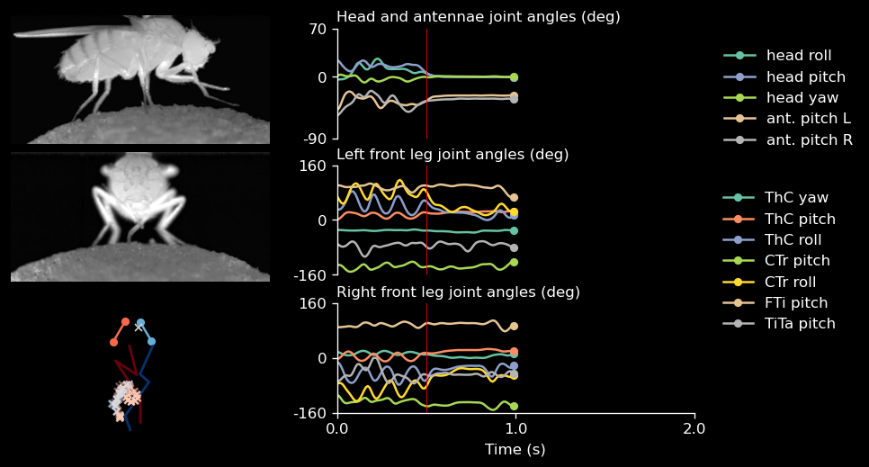
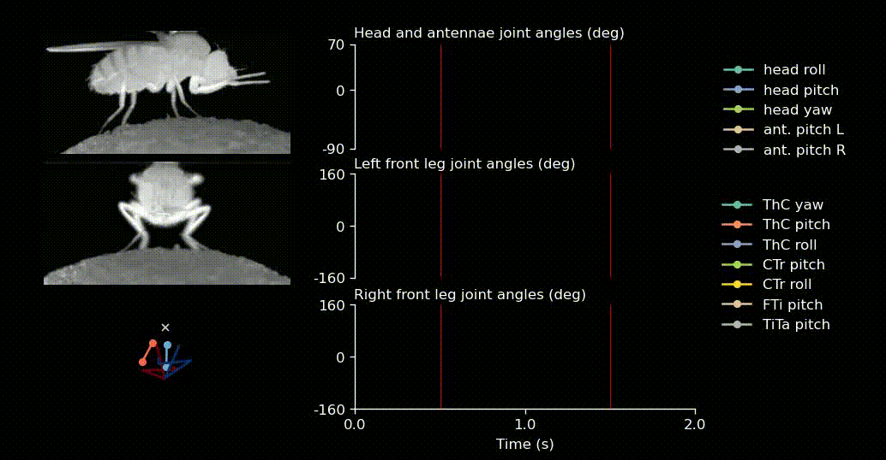

Visualization tools#
In this tutorial, we will use seqikpy to visualize the results.
# Import the necessary libraries
from pathlib import Path
import numpy as np
import matplotlib.pyplot as plt
from seqikpy.utils import make_video
from seqikpy.alignment import AlignPose, convert_from_df3dpp_to_dict
from seqikpy.kinematic_chain import KinematicChainSeq
from seqikpy.leg_inverse_kinematics import LegInvKinSeq
from seqikpy.visualization import (
get_frames_from_video_ffmpeg,
load_grid_plot_data,
plot_grid_generator,
get_plot_config,
plot_grid,
video_frames_generator)
# Set up the constant variables
leg_joint_angle_names = [
"ThC_yaw",
"ThC_pitch",
"ThC_roll",
"CTr_pitch",
"CTr_roll",
"FTi_pitch",
"TiTa_pitch",
]
head_angles_to_plot = [
"Angle_head_roll",
"Angle_head_pitch",
"Angle_head_yaw",
"Angle_antenna_pitch_L",
"Angle_antenna_pitch_R",
]
# Load the data
data_path = Path("../data/anipose_pose-220807_aJO-GAL4xUAS-CsChr_Fly002_002_Beh")
video_path_front = data_path / "camera_3.mp4"
video_path_side = data_path / "camera_5.mp4"
[!NOTE] Note that the plot below is written specifically for front leg, head kinematics. One can easily extend this code to plot all six legs for locomotion.
# plot config determines which body parts to plot
exp_type, plot_config = get_plot_config(data_path)
# loads the joint angles and the aligned pos
joint_angles, aligned_pose = load_grid_plot_data(data_path)
# as neck pose is one dimensional, make it consistent with the other key points
aligned_pose["Neck"] = np.tile(
aligned_pose["Neck"],
(aligned_pose["RF_leg"].shape[0], 1)
).reshape(-1, 1, 3)
# Start, end of the plotting data
t_start = 0
t_end = 200
# t: snapshot to show
t = t_start + 100
fps = 100
# Stimulation applied? If so, when
stim_lines=[50]
# Ignore this, we put it because we cropped the data in the previous tutorial
crop_time = 400
fly_frames_front = video_frames_generator(video_path_front, t_start + crop_time, t_end + crop_time, stim_lines)
fly_frames_side = video_frames_generator(video_path_side, t_start + crop_time, t_end + crop_time, stim_lines)
fig = plot_grid(
img_front=list(fly_frames_front)[t - t_start],
img_side=list(fly_frames_side)[t - t_start],
aligned_pose=aligned_pose,
joint_angles=joint_angles,
leg_angles_to_plot=leg_joint_angle_names,
head_angles_to_plot=head_angles_to_plot,
key_points_to_trail={'LF_leg':[3], 'RF_leg':[3]},
marker_trail="x",
t=t,
t_start=t_start,
t_end=t_end,
fps=fps,
trail=30,
t_interval=100,
stim_lines=stim_lines,
#export_path=DATA_PATH / f'frame_{t}_alpha1.2_beta_0.png',
**plot_config
)
plt.show()

One can also create such videos.
fly_frames_front = video_frames_generator(video_path_front, t_start + crop_time, t_end + crop_time, stim_lines)
fly_frames_side = video_frames_generator(video_path_side, t_start + crop_time, t_end + crop_time, stim_lines)
generator = plot_grid_generator(
fly_frames_front=fly_frames_front,
fly_frames_side=fly_frames_side,
aligned_pose=aligned_pose,
joint_angles=joint_angles,
leg_angles_to_plot=leg_joint_angle_names,
head_angles_to_plot=head_angles_to_plot,
key_points_to_trail={'LF_leg':[3], 'RF_leg':[3]},
marker_trail="x",
t_start=t_start,
t_end=t_end,
fps=fps,
trail=30,
t_interval=100,
stim_lines=stim_lines,
**plot_config
)
make_video(
str(data_path / 'grid_video.mp4'),
generator,
fps=fps,
n_frames=t_end - t_start)
199it [00:58, 3.41it/s]
